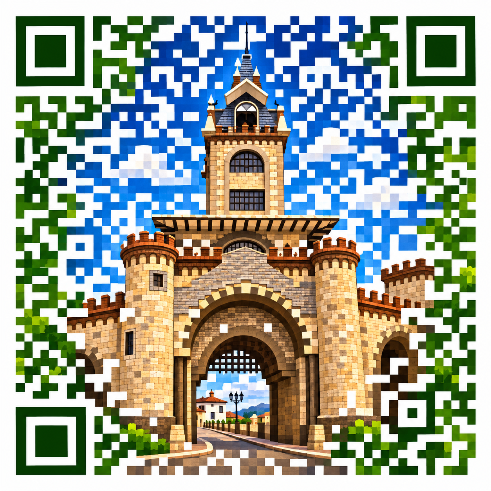

Somos Loja
Estás invitado a Loja 100 % Café Especial.
Prototipo: datos de ejemplo; fecha y sede reales por confirmar.
Un encuentro para descubrir el café de Loja, conocer a quienes lo hacen y compartir su historia.
- Fecha
- Sáb. 21 nov 2026
- Horario
- 10:00 a 18:00
- Lugar
- Parque Central de Loja
- Dirección
- Centro histórico, Loja
- Mapa
- Abrir mapa ↗
Beneficio de muestra
Una degustación por persona.
Prototipo de demostración: esta invitación no sirve para canjear nada.
